library(tidyverse)
library(sf)
library(terra)
library(tmap)
library(tmaptools)Making a Map in R
Recap of Last Week
Last week, we learned the basics of spatial data. We covered coordinate systems and projections, and learned the difference between vector and raster data. We also installed packages that we’ll need for today’s lesson, including tidyverse, tmap, sf, and terra.
Today’s Goals
Today, we’re going to go from raw data to a beautiful map. Specifically, we’ll
Find and download data from governmental sources
Read in spatial data like shapefiles and GeoTIFFs and create a spatial dataset from a csv
Learn some geoprocessing steps, like clipping and unionizing
Create a beautiful sampling map of lake Ontario that includes vector and raster data
Sound good? Then let’s get started!
Downloading Data
In contrast to analysis done from lab work, spatial data analysis almost always requires data from outside sources - we might want accurate state boundaries, topographical maps, or census data. Luckily, federal agencies have tons of spatial datasets that are freely available to use. But finding the right dataset can be tricky! Today, we’ll use two different government tools to download two datasets: an accurate outline of Lake Ontario, and Lake Ontario’s bathymetry.
Finding a Lake Ontario Outline
When I started this project out, I wanted a nice outline of Lake Ontario. So I googled something like “Great Lakes outlines shapefiles”. This brought me to ScienceBase, a repository of data managed by the USGS. There, they had a dataset called “Great Lakes and Watersheds Shapefiles”. I scrolled down to find Lake Ontario.
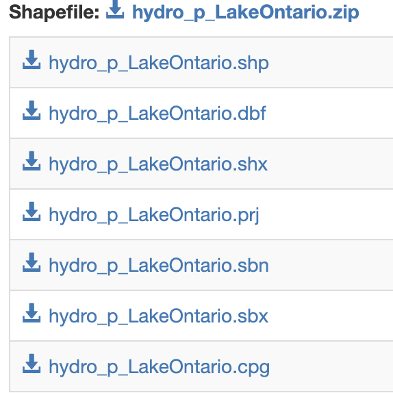
Ok! This looks a little confusing. We learned last week that shapefiles (.shp) are a common method of storing spatial data. We can see a .shp file at the top of this list…but there’s six other files too? Which is the right file?
As it turns out, all of them. A shapefile will never be alone. So we’ll click the hydro_p_LakeOntario.zip at the top to download all of them. Then, you’ll unzip that directory. I’ve already done this in our project’s data folder. If you click into the hydro_p_LakeOntario directory, you’ll see we have seven files total, including the .shp file. When you’re working with shapefiles, you’ll always refer to the .shp file, but it should always live in the same directory as its helper files.
Finding Lake Ontario Bathymetry
Next, I wanted a map of the bathymetry of Lake Ontario. Bathymetry is like topography, but underwater - it shows what the lake bottom looks like.
So, I google “Great Lakes Bathymetry”. This brought me to NOAA’s National Centers for Environmental Information page, which manages and distributes NOAA datasets. I scrolled down to Lake Ontario, where there are many different data options. First is a contours shapefile - this will encode the data as a circular contours showing isolines of depths. This would be fine, but I want the option to work with the higher-resolution grid. Instead, I’m going to click ont he GeoTiff, and download it as a .tar.gz file into my data folder. Finally, I unzipped it.
The result is a directory containing three files; the ontario_lld.tif file (which contains the actual raster values) as well as a .tfw and .prj file, containing information on the geographic extent and projection of the grid.
EPA Water Chemistry Data
Finally, if you look in the data folder, you’ll see the EPA_WaterChem.csv file. If we preview this file in Excel, we’ll see it contains information from an EPA sampling cruise on Lake Ontario last May. The EPA visited 31 sites across Lake Ontario, and collected measurements of water quality. Today, we’re working with a small subset of this data - just the surface samples from May, and four water quality measures: Total Nitrogen (TN), Total Phosphorus (TP), Dissolved Organic Carbon (DOC), and Chlorophyll-a. Each site also has its Latitude and Longitude recorded, in decimal degrees.
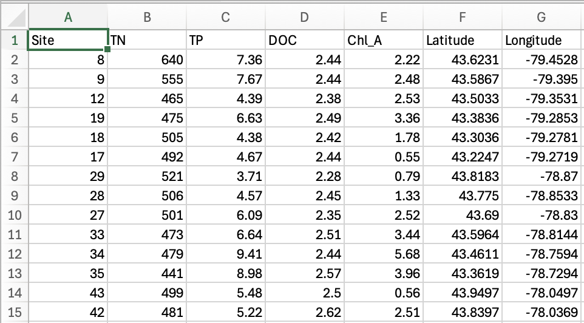
Loading Necessary Libraries
Next, let’s load the libraries we’ll use for our data analysis.
Please check the output of these commands carefully. After we load sf, we should see a message like
Linking to GEOS 3.11.0, GDAL 3.5.3, PROJ 9.1.0..
If you have a different warning message, please let Gus know.
Otherwise, you may get some warnings like The following object is masked... or Registered S3 method overwritten... - these are totally fine and not a cause of concern!
Reading in Lake Ontario Outline
Next, let’s read in our Lake Ontario outline. To do this, we’ll use the st_read function from the sf package.
outline <- st_read("data/hydro_p_LakeOntario/hydro_p_LakeOntario.shp")Reading layer `hydro_p_LakeOntario' from data source
`/Users/augustuspendleton/Desktop/Coding/Hacky_Hour_Tutorials/20240716_Spatial_R_Day2/data/hydro_p_LakeOntario/hydro_p_LakeOntario.shp'
using driver `ESRI Shapefile'
Simple feature collection with 2 features and 7 fields
Geometry type: POLYGON
Dimension: XY
Bounding box: xmin: -79.78268 ymin: 43.18171 xmax: -76.05991 ymax: 44.23282
Geodetic CRS: GeographicLet’s look at the message it’s provided us. We see it recognized that it’s an “ESRI Shapefile”. In the language of sf (which stands for “simple features”), this is a collection of 2 features (or geometries) with 7 fields (attributes). It’s a polygon geometry, with a geographic coordinate reference system (CRS). We can also see that the “bounding box” (spatial extent) of our object is in degrees.
We can use tmap to take a quick look at this polygon set. You’ll notice that tmap use a grammar similar to ggplot, where we first use tm_shape to reference our data (like calling ggplot()) and then add geoms using a plus sign and the function tm_polygons.
tm_shape(outline) +
tm_polygons()That looks like Ontario (yay!). And now we understand why our data has two features - there’s one polygon for the Canadian side, and another for the US side. Going forward, I don’t want that line in the center, so I’m going to merge these two polygons into one using the command st_union
outline_union <- st_union(outline)Let’s see if that worked
tm_shape(outline_union) +
tm_polygons()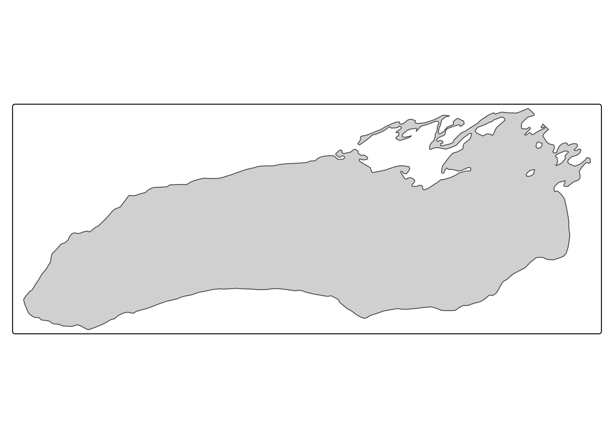
Much better! Now there’s only one feature.
Reading in Lake Ontario Bathymetry
Next, let’s read in our Ontario bathymetry using the rast function from terra. We’ll also check its coordinate reference system while we’re at it.
bathymetry <- rast("data/ontario_lld/ontario_lld.tif")
st_crs(bathymetry)Coordinate Reference System:
User input: NAD83
wkt:
GEOGCRS["NAD83",
DATUM["North American Datum 1983",
ELLIPSOID["GRS 1980",6378137,298.257222101004,
LENGTHUNIT["metre",1]]],
PRIMEM["Greenwich",0,
ANGLEUNIT["degree",0.0174532925199433]],
CS[ellipsoidal,2],
AXIS["geodetic latitude (Lat)",north,
ORDER[1],
ANGLEUNIT["degree",0.0174532925199433]],
AXIS["geodetic longitude (Lon)",east,
ORDER[2],
ANGLEUNIT["degree",0.0174532925199433]],
ID["EPSG",4269]]If you look in the environment pane, you’ll see that terra stores data as something called a SpatRaster (for spatial raster). Our reference system is also geographic, and also relies on the NAD83 datum. Let’s check to see what our raster looks like.
tm_shape(bathymetry) +
tm_raster()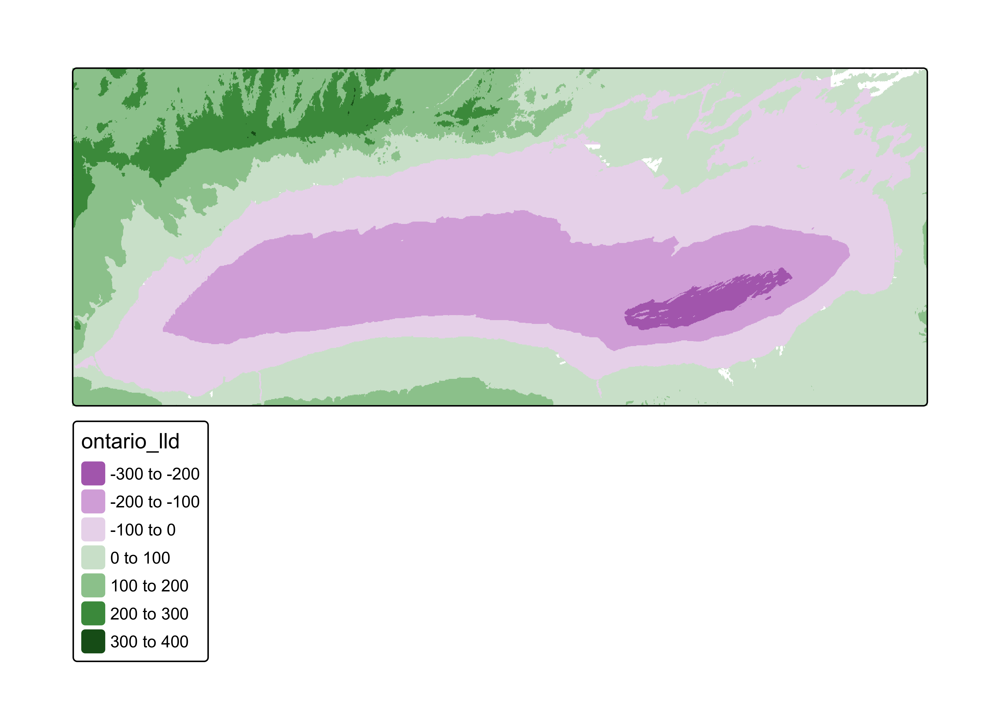
underwater_bathymetry <- clamp(bathymetry, upper = 0, values = FALSE)Okay! That is a definite start. When we ran this command, we got some warning messages; first that our SpatRaster object was “downsampled”, This is okay - it means that tmap reduced the resolution of our dataset to match our computer’s resolution. It also warned us that since our data has both positive and negative values (elevation, in this case), it set the midpoint of our color scale to 0. This is also fine; we’re going to deal with this in a sec.
The major problem we notice is that this raster doesn’t just contain bathymetry for Lake Ontario; it also contains the elevation of the surrounding landscape as well. We don’t want this, so we need to remove these values. We’ll do this using a geoprocessing tool called “clipping”. First, however, we’re going to project our data.
Projecting Our Data
In our next steps, we’re going to use our Ontario outline to “clip” values in our Lake Ontario bathymetry. However, when we combine or apply any two spatial sets together, they should always have matching coordinate reference systems. We can check if their reference systems are the same:
st_crs(outline_union)Coordinate Reference System:
User input: Geographic
wkt:
GEOGCRS["Geographic",
DATUM["North American Datum 1983",
ELLIPSOID["GRS 1980",6378137,298.257222101,
LENGTHUNIT["metre",1]],
ID["EPSG",6269]],
PRIMEM["<custom>",0,
ANGLEUNIT["Degree",0.0174532925199433]],
CS[ellipsoidal,2],
AXIS["longitude",east,
ORDER[1],
ANGLEUNIT["Degree",0.0174532925199433]],
AXIS["latitude",north,
ORDER[2],
ANGLEUNIT["Degree",0.0174532925199433]]]st_crs(bathymetry)Coordinate Reference System:
User input: NAD83
wkt:
GEOGCRS["NAD83",
DATUM["North American Datum 1983",
ELLIPSOID["GRS 1980",6378137,298.257222101004,
LENGTHUNIT["metre",1]]],
PRIMEM["Greenwich",0,
ANGLEUNIT["degree",0.0174532925199433]],
CS[ellipsoidal,2],
AXIS["geodetic latitude (Lat)",north,
ORDER[1],
ANGLEUNIT["degree",0.0174532925199433]],
AXIS["geodetic longitude (Lon)",east,
ORDER[2],
ANGLEUNIT["degree",0.0174532925199433]],
ID["EPSG",4269]]st_crs(outline_union) == st_crs(bathymetry)[1] FALSEWe see that their projections aren’t identical; while they both use the NAD83 datum, their EPSG codes are different. An EPSG code is a succinct identifier for different projections. Our outline had an EPSG code of 6269, while our bathymetry had an EPSG code of 4269. These datasets won’t be able to interact until we make sure they have the same reference system.
Additionally, when we make maps, recall that we should project geographic (angular) coordinates to 2D (cartesian) coordinates, in a way that best limits distortion. As such, this seems like a good time to project our data into the projection we’ll use when mapping. Today, we’ll use a projection with EPSG code 3174, which is a good projection to limit distortion across the Great Lakes. We’ll use the function st_transform to project vector data, and project to project our raster.
proj_outline <- st_transform(outline_union, crs = "EPSG:3174")
proj_bathymetry <- project(bathymetry, "EPSG:3174")
st_crs(proj_outline)Coordinate Reference System:
User input: EPSG:3174
wkt:
PROJCRS["NAD83 / Great Lakes Albers",
BASEGEOGCRS["NAD83",
DATUM["North American Datum 1983",
ELLIPSOID["GRS 1980",6378137,298.257222101,
LENGTHUNIT["metre",1]]],
PRIMEM["Greenwich",0,
ANGLEUNIT["degree",0.0174532925199433]],
ID["EPSG",4269]],
CONVERSION["Great Lakes Albers",
METHOD["Albers Equal Area",
ID["EPSG",9822]],
PARAMETER["Latitude of false origin",45.568977,
ANGLEUNIT["degree",0.0174532925199433],
ID["EPSG",8821]],
PARAMETER["Longitude of false origin",-84.455955,
ANGLEUNIT["degree",0.0174532925199433],
ID["EPSG",8822]],
PARAMETER["Latitude of 1st standard parallel",42.122774,
ANGLEUNIT["degree",0.0174532925199433],
ID["EPSG",8823]],
PARAMETER["Latitude of 2nd standard parallel",49.01518,
ANGLEUNIT["degree",0.0174532925199433],
ID["EPSG",8824]],
PARAMETER["Easting at false origin",1000000,
LENGTHUNIT["metre",1],
ID["EPSG",8826]],
PARAMETER["Northing at false origin",1000000,
LENGTHUNIT["metre",1],
ID["EPSG",8827]]],
CS[Cartesian,2],
AXIS["easting (X)",east,
ORDER[1],
LENGTHUNIT["metre",1]],
AXIS["northing (Y)",north,
ORDER[2],
LENGTHUNIT["metre",1]],
USAGE[
SCOPE["Basin-wide mapping and analysis."],
AREA["Canada and United States (USA) - Great Lakes basin."],
BBOX[40.99,-93.17,50.74,-74.47]],
ID["EPSG",3174]]st_crs(proj_outline) == st_crs(proj_bathymetry)[1] TRUEWe see that our data are now projected to EPSG 3174, “Great Lakes Albers”, and that both our outline and our bathymetry have matching reference systems.
Clipping Our Bathymetry
Next, we want to “clip” our raster, such that only values inside our Lake Ontario outline are kept. We’ll use the function mask from terra to do so.
clip_bathymetry <- mask(proj_bathymetry, vect(proj_outline))Let’s confirm that worked.
tm_shape(clip_bathymetry) +
tm_raster()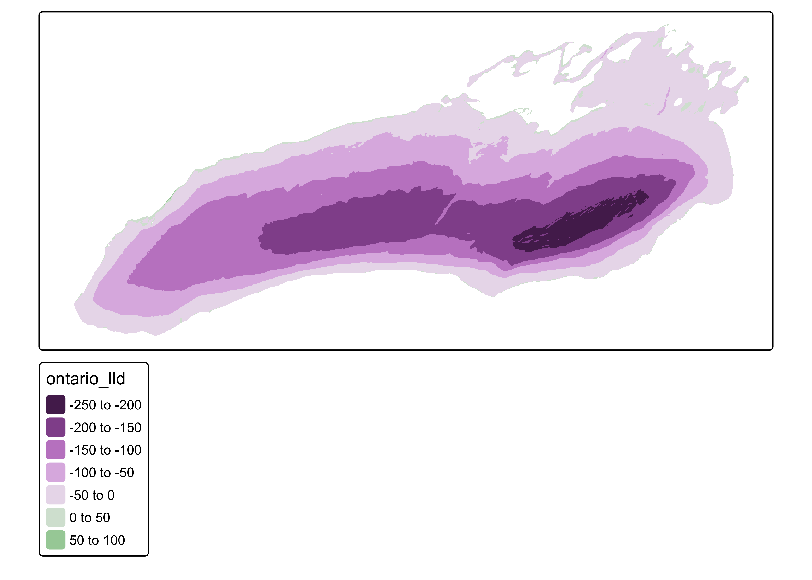
Much better! However, we do notice that there are still a few bits of elevation above lake level, specifically around the shoreline and on a few islands. Let’s trim those out, using a function called clamp.
clamp_bathymetry <- clamp(clip_bathymetry, upper = 0)
final_bathymetry <- clamp_bathymetry * -1
tm_shape(final_bathymetry) +
tm_raster()Awesome! You’ll see I also added a line to convert our bathymetry from negative values (i.e. “elevation”) to positive values (i.e. “depth”).
Reading in Our Site Data
Next, let’s read in the data collected by the EPA.
site_df <- read_csv("data/EPA_WaterChem.csv")
glimpse(site_df)Rows: 31
Columns: 7
$ Site <dbl> 8, 9, 12, 19, 18, 17, 29, 28, 27, 33, 34, 35, 43, 42, 41, 40…
$ TN <dbl> 640, 555, 465, 475, 505, 492, 521, 506, 501, 473, 479, 441, …
$ TP <dbl> 7.36, 7.67, 4.39, 6.63, 4.38, 4.67, 3.71, 4.57, 6.09, 6.64, …
$ DOC <dbl> 2.44, 2.44, 2.38, 2.49, 2.42, 2.44, 2.28, 2.45, 2.35, 2.51, …
$ Chl_A <dbl> 2.22, 2.48, 2.53, 3.36, 1.78, 0.55, 0.79, 1.33, 2.52, 3.44, …
$ Latitude <dbl> 43.6231, 43.5867, 43.5033, 43.3836, 43.3036, 43.2247, 43.818…
$ Longitude <dbl> -79.4528, -79.3950, -79.3531, -79.2853, -79.2781, -79.2719, …So we’ve read this data in as a dataframe. R doesn’t know that it has spatial data yet! We need to convert this dataframe to a spatial object using the st_as_sf function.
site_sf <- st_as_sf(site_df,
coords = c("Longitude", "Latitude"))
site_sfSimple feature collection with 31 features and 5 fields
Geometry type: POINT
Dimension: XY
Bounding box: xmin: -79.4528 ymin: 43.2247 xmax: -76.51833 ymax: 43.9497
CRS: NA
# A tibble: 31 × 6
Site TN TP DOC Chl_A geometry
<dbl> <dbl> <dbl> <dbl> <dbl> <POINT>
1 8 640 7.36 2.44 2.22 (-79.4528 43.6231)
2 9 555 7.67 2.44 2.48 (-79.395 43.5867)
3 12 465 4.39 2.38 2.53 (-79.3531 43.5033)
4 19 475 6.63 2.49 3.36 (-79.2853 43.3836)
5 18 505 4.38 2.42 1.78 (-79.2781 43.3036)
6 17 492 4.67 2.44 0.55 (-79.2719 43.2247)
7 29 521 3.71 2.28 0.79 (-78.87 43.8183)
8 28 506 4.57 2.45 1.33 (-78.8533 43.775)
9 27 501 6.09 2.35 2.52 (-78.83 43.69)
10 33 473 6.64 2.51 3.44 (-78.8144 43.5964)
# ℹ 21 more rowsNow we have another simple feature collection. This time it’s a POINT collection, with 31 features (points) with 5 fields (attributes). You’ll notive it looks like a dataframe, and has the same columns as our dataframe, but there is a special column called geometry that contains the coordinates of each feature. We also see that there is no CRS. R has no idea what reference system these coordinates are actually in, because we never told it. We can set the CRS using st_set_crs function. In this case, we’ll use EPSG:4326, which is the WGS84 angular coordinate system usually reported by GPS.
site_sf_crs <- st_set_crs(site_sf,
"EPSG:4326")
site_sf_crsSimple feature collection with 31 features and 5 fields
Geometry type: POINT
Dimension: XY
Bounding box: xmin: -79.4528 ymin: 43.2247 xmax: -76.51833 ymax: 43.9497
Geodetic CRS: WGS 84
# A tibble: 31 × 6
Site TN TP DOC Chl_A geometry
* <dbl> <dbl> <dbl> <dbl> <dbl> <POINT [°]>
1 8 640 7.36 2.44 2.22 (-79.4528 43.6231)
2 9 555 7.67 2.44 2.48 (-79.395 43.5867)
3 12 465 4.39 2.38 2.53 (-79.3531 43.5033)
4 19 475 6.63 2.49 3.36 (-79.2853 43.3836)
5 18 505 4.38 2.42 1.78 (-79.2781 43.3036)
6 17 492 4.67 2.44 0.55 (-79.2719 43.2247)
7 29 521 3.71 2.28 0.79 (-78.87 43.8183)
8 28 506 4.57 2.45 1.33 (-78.8533 43.775)
9 27 501 6.09 2.35 2.52 (-78.83 43.69)
10 33 473 6.64 2.51 3.44 (-78.8144 43.5964)
# ℹ 21 more rowsFinally, let’s project our data to the same Great Lakes projection that we used for our outline and bathymetry.
proj_site_sf <- st_transform(site_sf_crs,
crs = "EPSG:3174")
proj_site_sfSimple feature collection with 31 features and 5 fields
Geometry type: POINT
Dimension: XY
Bounding box: xmin: 1403076 ymin: 752678.1 xmax: 1639774 ymax: 840212.1
Projected CRS: NAD83 / Great Lakes Albers
# A tibble: 31 × 6
Site TN TP DOC Chl_A geometry
* <dbl> <dbl> <dbl> <dbl> <dbl> <POINT [m]>
1 8 640 7.36 2.44 2.22 (1403076 795972.1)
2 9 555 7.67 2.44 2.48 (1407981 792222.7)
3 12 465 4.39 2.38 2.53 (1411943 783178.3)
4 19 475 6.63 2.49 3.36 (1418265 770242.5)
5 18 505 4.38 2.42 1.78 (1419419 761401.5)
6 17 492 4.67 2.44 0.55 (1420486 752678.1)
7 29 521 3.71 2.28 0.79 (1448449 820727.2)
8 28 506 4.57 2.45 1.33 (1450124 816015)
9 27 501 6.09 2.35 2.52 (1452654 806713)
10 33 473 6.64 2.51 3.44 (1454637 796414.7)
# ℹ 21 more rowsMaking a Beautiful Map
We now have all of our data cleaned up, in a matching crs, and ready to be mapped. Let’s first work to build a beautiful site map, showing the sites that we sampled. tmap works similarly to ggplot, where you build the plot up by layers, and then can use theme and layout arguments to adjust the visualization. What’s different is that in tmap, each layer will typically involve a new dataset. So for instance, below, I’ll use the tm_shape command to show that I’m bringing in a new dataset.
tm_shape(final_bathymetry) +
tm_raster() +
tm_shape(proj_outline) +
tm_polygons(fill = NA) # Remove fill, so that we can see the bathymetry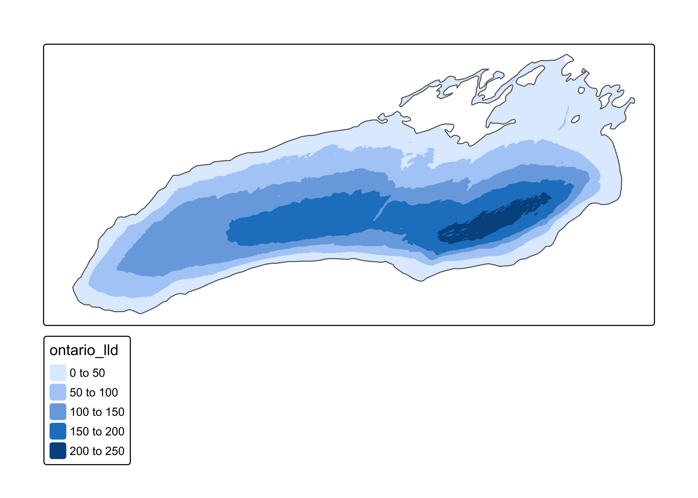
We can improve this basemap - let’s clean up the legend and adjust our palette slightly.
tm_shape(final_bathymetry) +
tm_raster(col.scale = tm_scale(values = "Blues"),
col.legend = tm_legend(title = "Depth (m)",
frame = FALSE,
orientation = "landscape",
position = tm_pos_out("center","bottom"))) +
tm_shape(proj_outline) +
tm_polygons(fill = NA)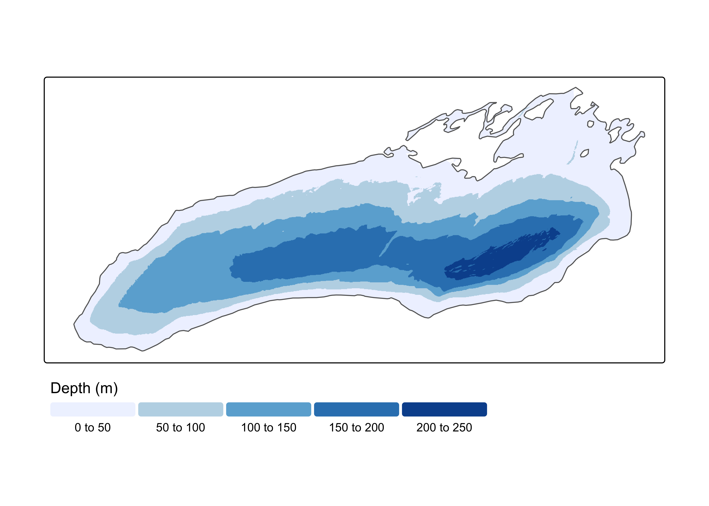
The commands for tmap can feel a bit overwhelming at first! I highly recommend this resource as a good description for now; once tmap v4.0 is released, I’m hopeful for good, updated documentation!
This is looking good! Let’s save it as a basemap, and then we’ll add our site locations on top.
basemap <- tm_shape(final_bathymetry) +
tm_raster(col.scale = tm_scale(values = "Blues"),
col.legend = tm_legend(title = "Depth (m)",
frame = FALSE,
orientation = "landscape",
position = tm_pos_out("center","bottom"))) +
tm_shape(proj_outline) +
tm_polygons(fill = NA)basemap +
tm_shape(proj_site_sf) +
tm_symbols()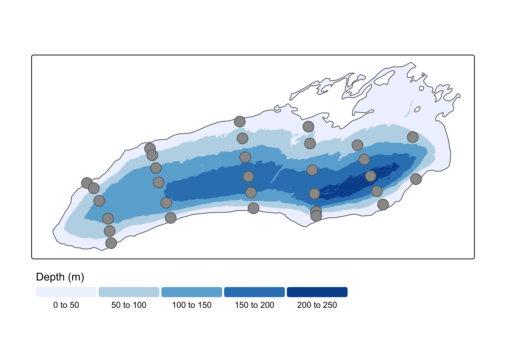
Now, we can see all of our sampling locations. Let’s adjust the fill and color, and add the site number as text inside.
basemap +
tm_shape(proj_site_sf) +
tm_symbols(fill = "white",
size = 1.5) +
tm_text(text = "Site",
size = 0.5)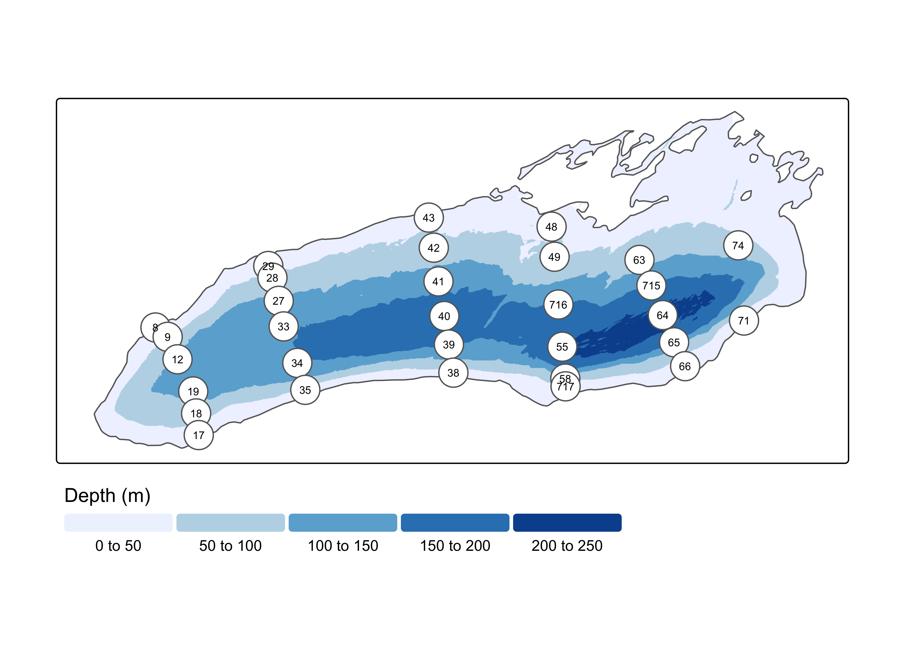
That’s a start! Let’s see if we can get it looking a little cleaner by those overlapping points, by messing around with the sizes and outline. I also dislike having a frame around the map; let’s remove it.
basemap +
tm_shape(proj_site_sf) +
tm_symbols(fill = "white",
col = NA,
size = 1.2) +
tm_text(text = "Site",
size = 0.5) +
tm_layout(frame = FALSE)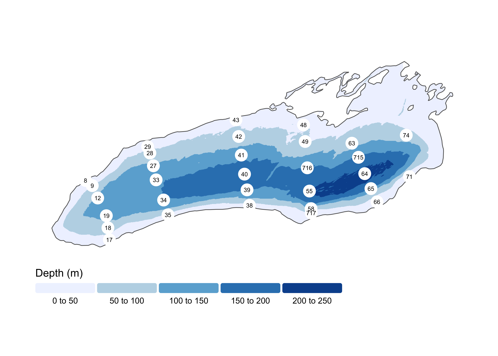
Okay! Now let’s add some common map elements, including a compass rose and a scale bar.
basemap +
tm_shape(proj_site_sf) +
tm_symbols(fill = "white",
col = NA,
size = 1.2) +
tm_text(text = "Site",
size = 0.5) +
tm_layout(frame = FALSE) +
tm_compass(position = tm_pos_in("left","top"),
size = 2,
text.size = 1) +
tm_scalebar(breaks = c(0,25,50),
position = tm_pos_out(cell.h = "center", cell.v = "bottom",
pos.h = "center", pos.v = "bottom"),
text.size = .75)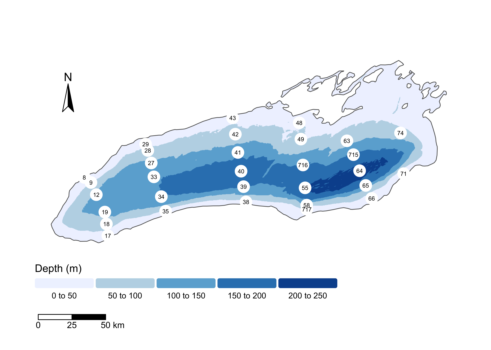
I think that looks really nice! Let’s save it as an image that we can share.
final_map <- basemap +
tm_shape(proj_site_sf) +
tm_symbols(fill = "white",
col = NA,
size = 1.2) +
tm_text(text = "Site",
size = 0.5) +
tm_layout(frame = FALSE) +
tm_compass(position = tm_pos_in("left","top"),
size = 2,
text.size = 1) +
tm_scalebar(breaks = c(0,25,50),
position = tm_pos_out(cell.h = "center", cell.v = "bottom",
pos.h = "center", pos.v = "bottom"),
text.size = .75)
tmap_save(final_map,
filename = "Site_Map.png",
units = "in",
width = 7,
height = 5)And here’s our final map!
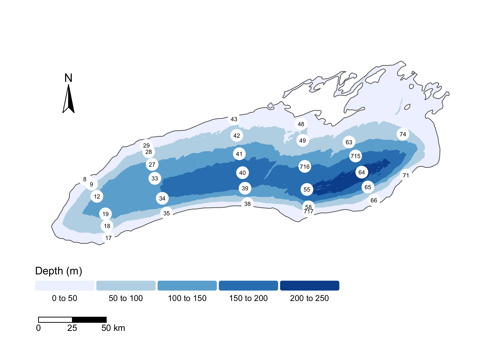 ## Challenges:
Change the fill of symbols to reflect concentrations of different environmental variables. What trends do you see?
Make multiple maps and use
tmap_arrangeto combine and export them.Find a new spatial data from a federal data source (I’d check out NOAA NCEI, USGS, or the EPA). Download, import, and map the data.